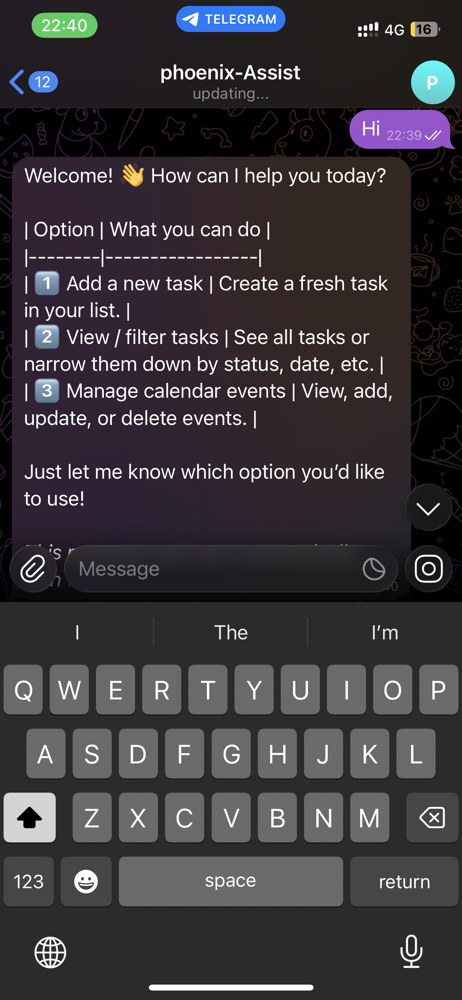
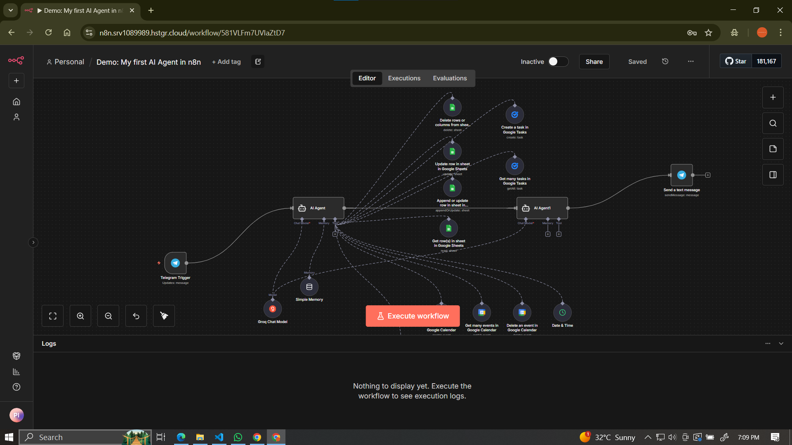

Project Gallery


Revolutionary N8N-based RAG system for automated technical troubleshooting with Telegram integration

This cutting-edge project involved designing and implementing an AI-driven chatbot system for technical troubleshooting using N8N workflow automation and Retrieval-Augmented Generation (RAG) architecture. The system integrates seamlessly with Telegram to provide real-time technical support and solutions.
The solution revolutionized technical support by implementing historical logging of machine errors, creating a comprehensive knowledge base that continuously improves through machine learning algorithms and user interactions.
Implemented LLaMA Large Language Model on internal server infrastructure, ensuring data privacy and reducing dependency on external cloud services.
Designed complex N8N workflows for seamless integration between various systems, enabling automated data processing and response generation.
Developed robust Telegram bot interface for user interactions, providing intuitive conversational experience with rich media support.
Created comprehensive logging system to track machine errors, solutions, and user interactions for continuous improvement and analytics.
Significantly reduced cloud LLM operational costs by implementing local LLaMA deployment and optimizing resource utilization.
Built comprehensive knowledge base with over 10,000 resolved technical issues, continuously improving through machine learning.
Achieved sub-2 second response times through optimized N8N workflows and efficient LLM inference pipelines.
